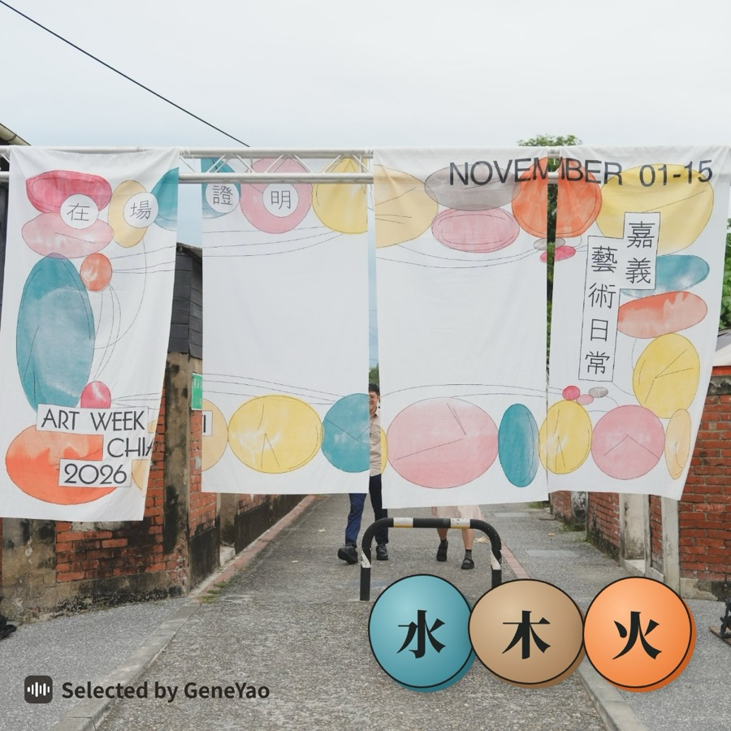

Playlist Curation
水生木，木生火。從一泓清水到黃金時刻，環境音樂、原聲與世界律動、Balearic 到 house，最後落在 70 年代的溫暖 soul。Water feeds wood, wood feeds fire. From a clear spring to the golden hour: ambient, acoustic and world grooves, Balearic into house, and finally warm 70s soul.
Presented by GeneYao
11:00–13:00 · 23 首23 tracks在 Spotify 收聽Listen on Spotify ↗
13:00–15:00 · 29 首29 tracks在 Spotify 收聽Listen on Spotify ↗
15:00–16:20 · 18 首18 tracks · DJ SET在 Spotify 收聽Listen on Spotify ↗
16:20–17:00 · 12 首12 tracks在 Spotify 收聽Listen on Spotify ↗